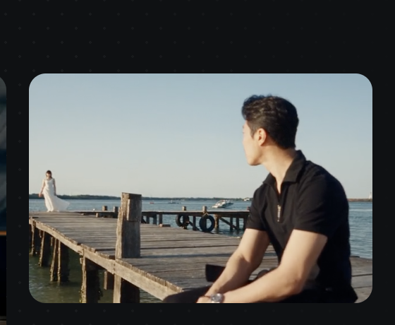
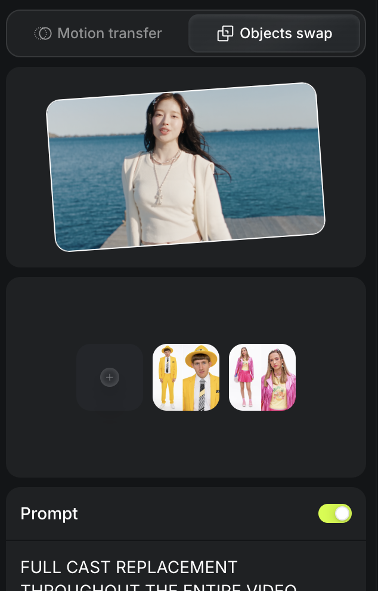
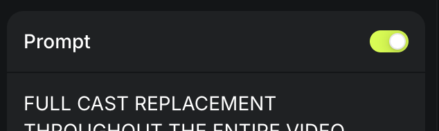

הסרטון כבר מחכה לכם בהיגספילד. נכנסים, עובדים לפי המדריך ומקבלים את אותו הסרטון עם הדמויות שבחרתם.

עם קרדיטים ליצירת וידאו.
מי שישיר בסרטון. תמונה ברורה מכף רגל ועד ראש, עם הבגדים שתרצו שיופיעו.
מי שיושב/ת לבד על המזח בפתיחה. גם כאן, תמונה ברורה של כל הגוף והלבוש.
חמישה שלבים ויש לכם סרטון


לוחצים על "העתקה" ומדביקים כמו שהוא בתיבת ה-Prompt. אין צורך לשנות כלום.
FULL CAST REPLACEMENT THROUGHOUT THE ENTIRE VIDEO. FINAL CAST: The ONLY people allowed anywhere in the output are the exact man from reference IMAGE 1 and the exact woman from reference IMAGE 2. Completely replace both original actors throughout the entire video. REFERENCE AUTHORITY: * IMAGE 1 alone defines the replacement man. Faithfully preserve his individual face, eyes, eyebrows, nose, lips, skin tone, hairstyle, facial hair if present, and natural body proportions. Keep his exact clothing, colors, footwear and accessories as shown in IMAGE 1 in every shot. * IMAGE 2 alone defines the replacement woman. Faithfully preserve her individual face, eyes, eyebrows, nose, lips, skin tone, hairstyle and natural body proportions. Keep her exact clothing, colors, footwear and accessories as shown in IMAGE 2 in every shot. * Do not invent similar-looking people, blend their identities with the source actors, or exchange their clothing. * Ignore both reference-image backgrounds, poses and camera viewpoints. Do not reproduce furniture, indoor scenery, selfie-taking arms or other reference-background objects. Place the reference people naturally into the source video's scenes and actions. * The VIDEO supplies shot order, camera movement, setting, lighting, action timing and actor tracks ONLY. The reference images supply the replacement identities and wardrobes. FIXED TRACK ASSIGNMENTS — NEVER REVERSED: TRACK A is the original short-haired male actor wearing the dark suit, including the person seated alone on the wooden jetty in the opening shot. Replace this ENTIRE person, from head to feet, with the exact woman from IMAGE 2. She inherits his position, scene role, gaze direction and action timing while retaining her own face, hairstyle, body and reference outfit. TRACK B is the original female actor wearing the light top/cardigan and denim skirt. Replace this ENTIRE person, from head to feet, with the exact man from IMAGE 1. He inherits her position, scene role, gaze direction and action timing while retaining his own face, hairstyle, body and reference outfit. These assignments follow the original actor tracks, regardless of the replacement person's gender. Never swap assignments after a cut or when the characters change positions. STRICT WARDROBE CONSISTENCY: Replace each source actor's entire outfit together with their face and body. Do not place a reference face onto a source actor's clothing. The replacement man must wear the exact outfit from IMAGE 1 throughout the entire video, INCLUDING THE SHOT AT 00:06. Preserve the same garments, colors and accessories across every cut and camera angle. The replacement woman must wear the exact outfit from IMAGE 2 throughout the entire video. Preserve the same garments, colors and accessories across every cut and camera angle. Neither person may inherit the original dark suit, cardigan, denim skirt or any other source wardrobe item unless that item is also shown in their own reference image. Do not invent wardrobe changes. SINGING PERFORMANCE — BOTH CHARACTERS: The reference woman on TRACK A performs the original male actor's vocal passages with expressive, synchronized lip movement while preserving her own face and identity. The reference man on TRACK B performs the original female actor's vocal passages with expressive, synchronized lip movement while preserving his own face and identity. Whenever a source performer is singing on screen, the assigned replacement person MUST visibly sing in synchronization with the syllables, phrasing and rhythm of the existing song. Use natural lip articulation, jaw movement, facial expressions and subtle head gestures. The mouth should articulate sung syllables and settle naturally between phrases. Apply this singing performance in close-ups, profiles and shared shots. Never retain or restore a source actor's face to imitate their mouth movements. Preserve the original soundtrack, voices and vocal timing exactly, even though the replacement performers have different genders. Do not add dialogue, alter the voices or introduce a replacement song. EVERY SHOT MUST FOLLOW THIS CAST RULE: * Original man alone -> exact woman from IMAGE 2 alone. * Original woman alone -> exact man from IMAGE 1 alone. * Both original actors together -> exact woman from IMAGE 2 on TRACK A and exact man from IMAGE 1 on TRACK B. Apply this mapping independently after EVERY camera cut, in close-ups, wide shots, profiles, rear views, shadows and reflections if present, and whenever a character returns after leaving the frame or being occluded. The opening frame must already show the exact woman from IMAGE 2 seated alone on the wooden jetty in place of the original man. The final frame must still show the correct replacements. Maintain both reference identities and outfits continuously from beginning to end. COMPLETE REMOVAL OF THE SOURCE ACTORS: Erase and regenerate each source actor's full visible head, face, hair, neck, torso, clothing, limbs and silhouette. Reconstruct the background wherever the replacement person's silhouette exposes areas previously covered by the source actor. No face-only overlays, partial replacements, blended identities, duplicate actors, ghost outlines or transitions that reveal a source actor. No frame may revert to an original face, hairstyle, body or costume. PRIORITIES: Accurate reference identities, exact reference outfits and complete cast replacement take priority over matching the source actors' body geometry or limb poses. Adapt the movements naturally to the replacement people's bodies. Preserve the existing ocean, beach, wooden jetty, shot durations, cuts, camera work, lighting and original soundtrack. Maintain photorealistic integration, natural scale, believable physical interaction and appropriate contact shadows.
אם אתם משתמשים בדמויות מצוירות, חיות, בובות או כל דבר שהוא לא אדם, קחו את הפרומפט לצ׳אט GPT, תסבירו לו מה יש בכל תמונה ובקשו שיתאים לכם אותו.
הפרומפט כתוב כך שבתמונה הראשונה יש גבר ובשנייה אישה. אם אצלכם זה אחרת (שתי נשים, שני גברים או הפוך), גם כאן כדאי לבקש מצ׳אט GPT לעדכן את הפרומפט.
תמונה ברורה, באור טוב, שבה רואים את כל הגוף והבגדים. הבגדים שבתמונה הם הבגדים שיופיעו בכל הסרטון.
היכנסו להיגספילד, בחרו את הסרטון, העלו את הדמויות שלכם ותייגו אותי בתוצאה.